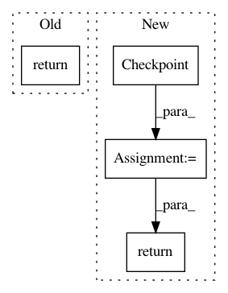

023d4c02a9fb420121859dd255d07529b9b14a74,python/ray/tune/trial.py,Trial,checkpoint,#Trial#,237
Before Change
assert self.checkpoint_manager.newest_memory_checkpoint.value
return self.checkpoint_manager.newest_memory_checkpoint
else:
return self.checkpoint_manager.newest_persistent_checkpoint
@classmethod
def generate_id(cls):
return str(uuid.uuid1().hex)[:8]
After Change
return self.checkpoint_manager.newest_memory_checkpoint
checkpoint = self.checkpoint_manager.newest_persistent_checkpoint
if checkpoint.value is None:
checkpoint = Checkpoint(Checkpoint.PERSISTENT, self.restore_path)
return checkpoint
@classmethod
def generate_id(cls):
return str(uuid.uuid1().hex)[:8]
In pattern: SUPERPATTERN
Frequency: 5
Non-data size: 4
Instances
Project Name: ray-project/ray
Commit Name: 023d4c02a9fb420121859dd255d07529b9b14a74
Time: 2020-03-09
Author: misraujval@gmail.com
File Name: python/ray/tune/trial.py
Class Name: Trial
Method Name: checkpoint
Project Name: CellProfiler/CellProfiler
Commit Name: f846e56a0ea748eb8ae7210b267170600ffaa3ff
Time: 2012-01-10
Author: leek@broadinstitute.org
File Name: cellprofiler/utilities/walk_in_background.py
Class Name:
Method Name: walk_in_background
Project Name: CellProfiler/CellProfiler
Commit Name: f846e56a0ea748eb8ae7210b267170600ffaa3ff
Time: 2012-01-10
Author: leek@broadinstitute.org
File Name: cellprofiler/utilities/walk_in_background.py
Class Name:
Method Name: get_metadata_in_background
Project Name: tensorflow/models
Commit Name: fd6987fafb615427316c0bfac6fdb185273fcfcc
Time: 2020-08-13
Author: vighneshb@google.com
File Name: research/object_detection/meta_architectures/center_net_meta_arch.py
Class Name: CenterNetMetaArch
Method Name: restore_from_objects
Project Name: tensorflow/models
Commit Name: 52bb4ab1d8dd42f033762b698a8acffc1b639387
Time: 2020-07-08
Author: rathodv@google.com
File Name: research/object_detection/meta_architectures/center_net_meta_arch.py
Class Name: CenterNetMetaArch
Method Name: restore_from_objects